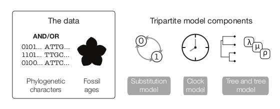

RevBayes Total Evidence Tree Estimation
Source:vignettes/module_08_TripartiteModel3_Fossilized_Birth_death/RB_Total_Evidence_Tutorial.Rmd
RB_Total_Evidence_Tutorial.RmdOverview
This tutorial builds upon the previous three tutorials to estimate a dated phylogeny from discrete morphological data using the Fossilized Birth-Death Model (FBD) (???; ???). Broadly, the FBD model is a “total-evidence” model and can incorporate fossil ages, molecular data, and morphological data to estimate a tree with branch lengths in units of absolute time. In this tutorial, we will focus on fossil ages and morphological data to estimate our phylogeny.
Introduction
 The above figure (Warnock and Wright 2020) demonstrates the “total-evidence” framework of the FBD model. In this model, there are three submodels. One describes cahracter change (the substitution model), one describes how rates of evolution are distributed across the tree (the clock model), and the final component describes how speciation, extinction and fossil sampling events are distributed in time (the tree model). The substitution and clock models have been discussed in the previous two tutorials.
Below is an image from Warnock and Wright (2020) showing the true tree and the reconstructed tree. The reconstructed tree is the tree we are capable of inferring from our fossil phylogenetic characters and our fossil ages. The true tree, on the other hand, is unkowable, as we will never have complete sampling in the past and the present.

Tree model
The joint prior distribution on tree topologies and divergence times of living and extinct species used in this tutorial is described by the fossilized birth-death (FBD) process (Stadler 2010; Heath, Huelsenbeck, and Stadler 2014). This model simply treats the fossil observations as part of the process governing the tree topology and branch times (the node in Fig. 3). The fossilized birth-death process provides a model for the distribution of speciation times, tree topology, and lineage samples before the present (e.g.,non-contemporaneous samples like fossils or viruses). This type of tree is shown in figure 2. Importantly, this model can be used with or without character data for the historical samples. Thus, it provides a reasonable prior distribution for analyses combining morphological or DNA data for both extant and fossil taxa—i.e.,the so-called “total-evidence” approaches described by Ronquist et al. (2012) and extended by Zhang et al. (2016) and Gavryushkina et al. (2016). When matrices of discrete morphological characters for both living and fossil species are unavailable, the fossilized birth-death model imposes a time structure on the tree by marginalizing over all possible attachment points for the fossils on the extant tree (Heath, Huelsenbeck, and Stadler 2014), therefore, some prior knowledge of phylogenetic relationships is important.
The FBD model (Fig. 3) describes the probability of the tree and fossils conditional on the birth-death parameters: \(f[\mathcal{T} \mid \lambda, \mu, \rho, \psi, \phi]\), where \(\mathcal{T}\) denotes the tree topology, divergence times, fossil occurrence times, and the times at which the fossils attach to the tree. The birth-death parameters \(\lambda\) and \(\mu\) denote the speciation and extinction rates, respectively. The “fossilization rate” or “fossil recovery rate” is denoted \(\psi\) and describes the rate at which fossils are sampled along lineages of the complete tree. The sampling probability parameter \(\rho\) represents the probability that an extant species is sampled, and \(\phi\) represents the time at which the process originated.

In the example FBD tree shown in figure 2, the diversification process originates at time \(\phi\), giving rise to \(n=20\) species in the present, with both sampled fossils (red circles) and extant species (black circles). All of the lineages represented in figure 2A (both solid and dotted lines) show the complete tree. This is the tree of all extant and extinct lineages generated by the process. The complete tree is distinct from the reconstructed tree (Fig. 2B) which is the tree representing only the lineages sampled as extant taxa or fossils. Fossil observations (red circles in figure 2) are recovered over the lifetime of the process along the lineages of the complete tree. If a lineage does not have any descendants sampled in the present, it is lost and cannot be observed, these are the dotted lines in figure 2A. The probability must be conditioned on the origin time of the process \(\phi\). The origin (\(\phi\)) of a birth-death process is the starting time of the stem lineage, thus this conditions on a single lineage giving rise to the tree.
An important characteristic of the FBD model is that it accounts for the probability of sampled ancestor-descendant pairs (Foote 1996). Given that fossils are sampled from lineages in the diversification process, the probability of sampling fossils that are ancestors to taxa sampled at a later date is correlated with the turnover rate (\(r=\mu/\lambda\)) and the fossil recovery rate (\(\psi\)). This feature is important, particularly for datasets with many sampled fossils. In the example (Fig. 2), several of the fossils have sampled descendants. These fossils have solid black lines leading to the present.
Incorporating Fossil Occurrence Time Uncertainty
In order to account for uncertainty in the ages of our fossil species, we can incorporate intervals on the ages of our represented fossil species. These intervals can be stratigraphic ranges or measurement standard error. We do this by assuming each fossil can occur with uniform probability anywhere within its observed interval. This is somewhat different from the typical approach to node calibration. Here, instead of treating the calibration density as an additional prior distribution on the tree, we treat it as the likelihood of our fossil data given the tree parameter. Specifically, we assume the likelihood of a particular fossil observation \(\mathcal{F}_i\) is equal to one if the fossil’s inferred age on the tree \(t_i\) falls within its observed time interval \((a_i,b_i)\), and zero otherwise: \[f[\mathcal{F}_i \mid a_i, b_i, t_i] = \begin{cases}
1 & \text{if } a_i < t_i < b_i\\
0 & \text{otherwise}
\end{cases}\] In other words, we assume the likelihood is equal to one if the inferred age is consistent with the data observed. We can represent this likelihood in RevBayesusing a distribution that is proportional to the likelihood, i.e.,non-zero when the likelihood is equal to one (Fig. 4). This model component represents the observed in the modular graphical model shown in figure 1.

It is worth noting that this is not technically the appropriate way to model fossil data that are actually observed as stratigraphic ranges. In paleontology, a stratigraphic range represents the interval of time between the first and last appearences of a fossilized species. Thus, this range typically represents multiple fossil specimens observed at different times along a single lineage. An extension of the fossilized birth-death process that is a distribution on stratigraphic ranges has been described by Stadler et al. (2017). This model is not yet fully implemented in RevBayes.
Example: Estimating the Phylogeny and Divergence Times of Fossil Cinctans
In this exercise, we will combine different types of data from 23 fossil species. For the fossil species, occurrence times are obtained from the literature or fossil databases like the Fossilworks PaleoDB or the Fossil Calibration Database, or from your own paleontological expertise. |
Tutorial Format
This tutorial follows a specific format for issuing instructions and information.
The boxed instructions guide you to complete tasks that are not part of the RevBayessyntax, but rather direct you to create directories or files or similar.
Information describing the commands and instructions will be written in paragraph-form before or after they are issued.
All command-line text, including all Revsyntax, are given in monotype font. Furthermore, blocks of Revcode that are needed to build the model, specify the analysis, or execute the run are given in separate shaded boxes. For example, we will instruct you to create a constant node called rho that is equal to 1.0 using the <- operator like this:
rho <- .506It is important to be aware that some PDF viewers may render some characters given as differently. Thus, if you copy and paste text from this PDF, you may introduce some incorrect characters. Because of this, we recommend that you type the instructions in this tutorial or copy them from the scripts provided.
Creating RevFiles
For complex models and analyses, it is best to create Revscript files that will contain all of the model parameters, moves, and functions. In this exercise, you will work primarily in your text editor[^1] and create a set of modular files that will be easily managed and interchanged. You will write the following files from scratch and save them in the scripts directory:
mcmc_TEFBD.Rev: the masterRevfile that loads the data, the separate model files, and specifies the monitors and MCMC sampler.model_FBDP_TEFBD.Rev: specifies the model parameters and moves required for the fossilized birth-death prior on the tree topology, divergence times, fossil occurrence times, and diversification dynamics.
All of the files that you will create are also provided in the RevBayestutorial repository[^2]. Please refer to these files to verify or troubleshoot your own scripts.
Start the Master RevFile and Import Data
Open your text editor and create the master Revfile called in the scripts directory.
Enter the Revcode provided in this section in the new model file.
The file you will begin in this section will be the one you load into RevBayeswhen you’ve completed all of the components of the analysis. In this section you will begin the file and write the Revcommands for loading in the taxon list and managing the data matrices. Then, starting in section Model FBD, you will move on to writing module files for each of the model components. Once the model files are complete, you will return to editing mcmc_TEFBD.Rev and complete the Revscript with the instructions given in section Complete MCMC].
Load Taxon List
Begin the Revscript by loading in the list of taxon names from the cinctans_taxa.tsv file using the readTaxonData() function.
taxa <- readTaxonData("data/cincta_fossil_intervals_FA.tsv")This function reads a tab-delimited file and creates a variable called taxa that is a list of all of the taxon names relevant to this analysis. This list includes all of cinctans.
Load Data Matrices
RevBayesuses the function readDiscreteCharacterData() to load a data matrix to the workspace from a formatted file. This function can be used for both discrete morphological characters.
Next, import the morphological character matrix and assign it to the variable morpho.
morpho <- readDiscreteCharacterData("data/Cinctans.nex")## Successfully read one character matrix from file 'data/Cinctans.nex'Create Helper Variables
Before we begin writing the Revscripts for each of the model components, we need to instantiate a couple “helper variables” that will be used by downstream parts of our model specification files. These variables will be used in more than one of the module files so it’s best to initialize them in the master file.
Create a new constant node called n_taxa that is equal to the number of species in our analysis (22).
n_taxa <- taxa.size()
num_branches <- 2 * n_taxa - 2Next, create a workspace variable called moves. This variable is an iterator that will build a vector containing all of the MCMC moves used to propose new states for every stochastic node in the model graph. Each time a new move is added to the vector, moves will be incremented by a value of 1.
moves = VectorMoves()
monitors = VectorMonitors()One important distinction here is that moves is part of the RevBayesworkspace and not the hierarchical model. Thus, we use the workspace assignment operator = instead of the constant node assignment <-.
Save your current working version of mcmc_TEFBD.Rev in the scripts directory.
We will now move on to the next Revfile and will complete mcmc_TEFBD.Rev in section Complete MCMC.
The Fossilized Birth-Death Process
Open your text editor and create the fossilized birth-death model file called in the scripts directory.
Enter the Revcode provided in this section in the new model file.
This file will define the models described in sections Intro to FBD and Intro to TipSampling above. If necessary, please review the graphical models depicted for the fossilized birth-death process (Fig. 3) and the likelihood of the tip sampling process (Fig. 3).
Speciation and Extinction Rates
Two key parameters of the FBD process are the speciation rate (the rate at which lineages are added to the tree, denoted by \(\lambda\) in Fig. 3) and the extinction rate (the rate at which lineages are removed from the tree, \(\mu\) in Fig. 3). We’ll place exponential priors on both of these values. Each parameter is assumed to be drawn independently from a different exponential distribution with rates \(\delta_{\lambda}\) and \(\delta_{\mu}\) respectively (see Fig. 3). Here, we will assume that \(\delta_{\lambda} = \delta_{\mu} = 10\). Note that an exponential distribution with \(\delta = 10\) has an expected value (mean) of \(1/10\).
Create the exponentially distributed stochastic nodes for the speciation_rate and extinction_rate using the ~ operator.
speciation_rate ~ dnExponential(10)
extinction_rate ~ dnExponential(10)For every stochastic node we declare, we must also specify proposal algorithms (called moves) to sample the value of the parameter in proportion to its posterior probability. If a move is not specified for a stochastic node, then it will not be estimated, but fixed to its initial value.
rho <- .506The rate parameters for extinction and speciation are both positive, real numbers (i.e.,non-negative floating point variables). For both of these nodes, we will use a scaling move (mvScale()), which proposes multiplicative changes to a parameter. Many moves also require us to set a tuning value, called lambda for mvScale(), which determine the size of the proposed change. Here, we will use three scale moves for each parameter with different values of lambda. By using multiple moves for a single parameter, we will improve the mixing of the Markov chain.
moves.append(mvScale(speciation_rate, lambda=0.01, weight=1))
moves.append(mvScale(speciation_rate, lambda=0.1, weight=1))
moves.append(mvScale(speciation_rate, lambda=1.0, weight=1))
moves.append(mvScale(extinction_rate, lambda=0.01, weight=1))
moves.append(mvScale(extinction_rate, lambda=0.1, weight=1))
moves.append(mvScale(extinction_rate, lambda=1, weight=1))You will also notice that each move has a specified weight. This option allows you to indicate how many times you would like a given move to be performed at each MCMC cycle. The way that we will run our MCMC for this tutorial will be to execute a schedule of moves at each step in our chain instead of just one move per step, as is done in MrBayes (Ronquist and Huelsenbeck 2003) or BEAST (Drummond et al. 2012; Bouckaert et al. 2014). Here, if we were to run our MCMC with our current vector of 6 moves, then our move schedule would perform 6 moves at each cycle. Within a cycle, an individual move is chosen from the move list in proportion to its weight. Therefore, with all six moves assigned weight=1, each has an equal probability of being executed and will be performed on average one time per MCMC cycle. For more information on moves and how they are performed in RevBayes, please refer to the Introduction to MCMC and Substitution Models tutorials.
In addition to the speciation (\(\lambda\)) and extinction (\(\mu\)) rates, we may also be interested in inferring diversification (\(\lambda - \mu\)) and turnover (\(\mu/\lambda\)). Since these parameters can be expressed as a deterministic transformation of the speciation and extinction rates, we can monitor (that is, track the values of these parameters, and print them to a file) their values by creating two deterministic nodes using the := operator.
diversification := speciation_rate - extinction_rate
turnover := extinction_rate/speciation_rateThe Fossil Sampling Rate
Since our data set includes serially sampled lineages, we must also account for the rate of sampling back in time. This is the fossil sampling (or recovery) rate (\(\psi\) in Fig. 3), which we will instantiate as a stochastic node (named psi). As with the speciation and extinction rates (Sect. FBD-Speciation & Extinction]), we will use an exponential prior on this parameter and use scale moves to sample values from the posterior distribution.
psi ~ dnExponential(10)
moves.append(mvScale(psi, lambda=0.01, weight=1))
moves.append(mvScale(psi, lambda=0.1, weight=1))
moves.append(mvScale(psi, lambda=1, weight=1))We also need to specify sampling at the last time interval where we had Cinctans. We have about 50% of the known Cinctans in this matrix.
rho <- .506 The Origin Time
We will condition the FBD process on the origin time (\(\phi\) in Fig. 3) of cinctans, and we will specify a uniform distribution on the origin age. For this parameter, we will use a sliding window move (mvSlide). A sliding window samples a parameter uniformly within an interval (defined by the half-width delta). Sliding window moves can be tricky for small values, as the window may overlap zero. However, for parameters such as the origin age, there is little risk of this being an issue.
origin_time ~ dnUnif(10.2, 15.2);
moves.append(mvSlide(origin_time, delta=0.01, weight=5.0))
moves.append(mvSlide(origin_time, delta=0.1, weight=5.0))
moves.append(mvSlide(origin_time, delta=1, weight=5.0))Note that we specified a higher move weight for each of the proposals operating on origin_time than we did for the three previous stochastic nodes. This means that our move schedule will propose five times as many updates to origin_time than it will to speciation_rate, extinction_rate, or psi.
The FBD Distribution Object
All the parameters of the FBD process have now been specified. The next step is to use these parameters to define the FBD tree prior distribution, which we will call fbd_dist.
fbd_dist = dnFBDP(origin=origin_time, lambda=speciation_rate, mu=extinction_rate, psi=psi, rho=rho, taxa=taxa)
ingroup = clade("Ctenocystis_utahensis","Gyrocystis_platessa","Gyrocystis_testudiformis","Gyrocystis_cruzae","Gyrocystis_badulesiensis",
"Gyrocystis_erecta","Progyrocystis_disjuncta","Protocinctus_mansillaensis","Elliptocinctus_barrandei","Elliptocinctus_vizcainoi","Sucocystis_theronensis","Sucocystis_bretoni","Lignanicystis_barriosensis","Undatacinctus_undata","Sucocystis_acrofera","Undatacinctus_quadricornuta","Undatacinctus_melendezi","Sotocinctus_ubaghsi","Ludwigicinctus_truncatus","Graciacystis_ambigua","Nelegerocystis_ivantzovi","Rozanovicystis_triangularis","Davidocinctus_pembrokensis")
constraints = v(ingroup)Then we can specify the final tree prior distribution by creating a vector of constraints, and providing it along with the workspace FBD distribution to the constrained topology distribution. Here we use the stochastic assignment operator ~ to create a stochastic node for our constrained, FBD-tree variable (called fbd_tree).
fbd_tree ~ dnConstrainedTopology(fbd_dist, constraints=constraints)Moves on the Tree Topology and Node Ages
Next, in order to sample from the posterior distribution of trees, we need to specify moves that propose changes to the topology (mvFNPR) and node times (mvNodeTimeSlideUniform). Included with these moves is a proposal that will collapse or expand a fossil branch (mvCollapseExpandFossilBranch). This will change a fossil that is a sampled ancestor (see Fig. 2 and Sect. Intro to FBD) so that it is on its own branch and vice versa. In addition, when conditioning on the origin time, we also need to explicitly sample the root age (mvRootTimeSlideUniform).
moves.append(mvFNPR(fbd_tree, weight=15.0))
moves.append(mvCollapseExpandFossilBranch(fbd_tree, origin_time, weight=6.0))
moves.append(mvNodeTimeSlideUniform(fbd_tree, weight=40.0))
moves.append(mvRootTimeSlideUniform(fbd_tree, origin_time, weight=5.0))Sampling Fossil Occurrence Ages
Next, we need to account for uncertainty in the age estimates of our fossils using the observed minimum and maximum stratigraphic ages provided in the file cinctans_fossil_intervals.tsv. First, we read this file into a matrix called intervals.
intervals = readDataDelimitedFile(file="data/cincta_fossil_intervals_FA.tsv", header=true)Next, we loop over this matrix. For each fossil observation, we create a uniform random variable representing the likelihood. Remember, we can represent the fossil likelihood using any uniform distribution that is non-zero when the likelihood is equal to one (Sect. Tip Sampling).
For example, if \(t_i\) is the inferred fossil age and \((a_i,b_i)\) is the observed stratigraphic interval, we know the likelihood is equal to one when \(a_i < t_i < b_i\), or equivalently \(t_i - b_i < 0 < t_i - a_i\). So let’s represent the likelihood using a uniform random variable uniformly distributed in \((t_i - b_i, t_i - a_i)\) and clamped at zero.
intervals = readDataDelimitedFile(file="data/cincta_fossil_intervals_FA.tsv", header=true)
# Setup the fossil tip sampling #
# Use a for loop to create a uniform distribution on the occurence time for each fossil #
# The boundaries of the uniform distribution are specified in the tsv file #
for(i in 1:intervals.size())
{
taxon = intervals[i][1]
a_i = intervals[i][2]
b_i = intervals[i][3]
t[i] := tmrca(fbd_tree, clade(taxon))
fossil[i] <- a_i
fossil[i] ~ dnSoftBoundUniformNormal(t[i] - b_i, t[i] - a_i, sd = 2, p = 0.025)
}Finally, we add a move that samples the ages of the fossil nodes on the tree.
moves.append(mvFossilTimeSlideUniform(fbd_tree, origin_time, weight=5.0))Monitoring Parameters of Interest using Deterministic Nodes
There are additional parameters that may be of particular interest to us that are not directly inferred as part of this graphical model. As with the diversification and turnover nodes specified in section FBD-Speciation & Extinction, we can create deterministic nodes to sample the posterior distributions of these parameters. Create a deterministic node called num_samp_anc that will compute the number of sampled ancestors in our fbd_tree.
num_samp_anc := fbd_tree.numSampledAncestors()
Complete Master RevFile
Return to the master Revfile you created in section Start Master Rev called in the scripts directory.
Enter the Revcode provided in this section in this file.
Source Model Scripts
RevBayesuses the source() function to load commands from Revfiles into the workspace. Use this function to load in the model scripts we have written in the text editor and saved in the scripts directory.
ucln_mean ~ dnExponential(2.0)
# sigma
ucln_sigma ~ dnExponential(3.0)
# Set a deterministic node on sigma^2
ucln_var := ucln_sigma * ucln_sigma
ucln_mu := ln(ucln_mean) - (ucln_var * 0.5)
moves.append(mvScale(ucln_mean, lambda=1.0, tune=true, weight=4.0))
moves.append(mvScale(ucln_sigma, lambda=0.5, tune=true, weight=4.0))
for (i in 1:num_branches){
branch_rate_var[i] ~ dnLognormal(ucln_mu, ucln_sigma)
moves.append(mvScale(branch_rate_var[i], lambda=1, tune=true, weight=2.0))
}
moves.append(mvVectorScale(branch_rate_var,lambda=1.0,tune=true,weight=2.0))
moves.append(mvVectorSingleElementScale(branch_rate_var,lambda=30.0,tune=true,weight=1.0))
Morph model
alpha_morpho ~ dnUniform( 0, 1E6 )
rates_morpho := fnDiscretizeGamma( alpha_morpho, alpha_morpho, 4 )
#Moves on the parameters of the Gamma distribution.
moves.append(mvScale(alpha_morpho, lambda=1, weight=2.0))
n_max_states <- 7
idx = 1
morpho_bystate[1] <- morpho
for (i in 2:n_max_states) {
# make local tmp copy of data
# only keep character blocks with state space equal to size i
morpho_bystate[i] <- morpho
morpho_bystate[i].setNumStatesPartition(i)
# get number of characters per character size wth i-sized states
nc = morpho_bystate[i].nchar()
# for non-empty character blocks
if (nc > 0) {
# make i-by-i rate matrix
q[idx] <- fnJC(i)
# create model of evolution for the character block
m_morph[idx] ~ dnPhyloCTMC( tree=fbd_tree,
Q=q[idx],
nSites=nc,
siteRates=rates_morpho,
branchRates = branch_rate_var,
type="Standard")
# attach the data
m_morph[idx].clamp(morpho_bystate[i])
# increment counter
idx = idx + 1
idx
}
}## [1] 2
## [2] 3
## [3] 4Create Model Object
We can now create our workspace model variable with our fully specified model DAG. We will do this with the model() function and provide a single node in the graph (sf).
mymodel = model(fbd_tree)The object mymodel is a wrapper around the entire model graph and allows us to pass the model to various functions that are specific to our MCMC analysis.
Specify Monitors and Output Filenames
The next important step for our master Revfile is to specify the monitors and output file names. For this, we create a vector called monitors that will each sample and record or output our MCMC.
The first monitor we will create will monitor every named random variable in our model graph. This will include every stochastic and deterministic node using the mnModel monitor. The only parameter that is not included in the mnModel is the tree topology. Therefore, the parameters in the file written by this monitor are all numerical parameters written to a tab-separated text file that can be opened by accessory programs for evaluating such parameters. We will also name the output file for this monitor and indicate that we wish to sample our MCMC every 10 cycles.
monitors.append(mnModel(filename="output/cinc_dated.log", printgen=10))The mnFile monitor writes any parameter we specify to file. Thus, if we only cared about the speciation rate and nothing else (this is not a typical or recommended attitude for an analysis this complex) we wouldn’t use the mnModel monitor above and just use the mnFile monitor to write a smaller and simpler output file. Since the tree topology is not included in the mnModel monitor (because it is not numerical), we will use mnFile to write the tree to file by specifying our pruned_tree variable in the arguments. Remember, we are monitoring the tree with nuisance taxa pruned out (section FBD Deterministic Nodes).
monitors.append(mnFile(filename="output/cinc_dated.trees", printgen=10, fbd_tree))The last monitor we will add to our analysis will print information to the screen. Like with mnFile we must tell mnScreen which parameters we’d like to see updated on the screen. We will choose the age of the MCRCA of living cinctans (age_extant), the number of sampled ancestors (num_samp_anc), and the origin time (origin_time).
monitors.append(mnScreen(printgen=10, num_samp_anc, origin_time))Set-Up the MCMC
Once we have set up our model, moves, and monitors, we can now create the workspace variable that defines our MCMC run. We do this using the mcmc() function that simply takes the three main analysis components as arguments. This step may give you quite a bit of output. As a convenience, we have not shown this here.
mymcmc = mcmc(mymodel, monitors, moves)The MCMC object that we named mymcmc has a member method called .run(). This will execute our analysis and we will set the chain length to 10000 cycles using the generations option.
mymcmc.run(generations=1000)## [1] Running MCMC simulation
## [2] This simulation runs 1 independent replicate.
## [3] The simulator uses 74 different moves in a random move schedule with 212 moves per iteration
## [4] Iter | Posterior | Likelihood | Prior | num_samp_anc | origin_time | elapsed | ETA |
## [5] ------------------------------------------------------------------------------------------------------------------------------------------
## [6] 0 | -897.903 | -781.062 | -116.841 | 0 | 14.08458 | 00:00:00 | --:--:-- |
## [7] 10 | -719.906 | -630.298 | -89.6074 | 5 | 14.93992 | 00:00:01 | --:--:-- |
## [8] 20 | -677.731 | -610.091 | -67.6408 | 6 | 15.10546 | 00:00:01 | 00:00:49 |
## [9] 30 | -654.248 | -586.247 | -68.0009 | 8 | 14.92468 | 00:00:02 | 00:01:04 |
## [10] 40 | -661.504 | -585.341 | -76.1633 | 6 | 15.1171 | 00:00:02 | 00:00:48 |
## [11] 50 | -655.092 | -575.867 | -79.2253 | 10 | 14.83108 | 00:00:02 | 00:00:38 |
## [12] 60 | -640.303 | -558.84 | -81.4628 | 10 | 15.17826 | 00:00:03 | 00:00:47 |
## [13] 70 | -636.271 | -550.621 | -85.6497 | 8 | 15.11557 | 00:00:03 | 00:00:39 |
## [14] 80 | -642.198 | -554.855 | -87.3433 | 8 | 15.11898 | 00:00:04 | 00:00:46 |
## [15] 90 | -631.819 | -528.851 | -102.968 | 8 | 14.93948 | 00:00:04 | 00:00:40 |
## [16] 100 | -647.77 | -525.043 | -122.727 | 6 | 15.15375 | 00:00:05 | 00:00:45 |
## [17] 110 | -630.538 | -518.795 | -111.743 | 6 | 15.02996 | 00:00:05 | 00:00:40 |
## [18] 120 | -678.359 | -531.37 | -146.99 | 6 | 14.7585 | 00:00:06 | 00:00:44 |
## [19] 130 | -674.161 | -526.043 | -148.118 | 6 | 15.1334 | 00:00:06 | 00:00:40 |
## [20] 140 | -664.42 | -528.823 | -135.597 | 7 | 15.05828 | 00:00:06 | 00:00:36 |
## [21] 150 | -673.822 | -518.881 | -154.941 | 4 | 15.13891 | 00:00:07 | 00:00:39 |
## [22] 160 | -666.921 | -520.677 | -146.244 | 3 | 15.19686 | 00:00:07 | 00:00:36 |
## [23] 170 | -684.304 | -535.025 | -149.279 | 5 | 15.19628 | 00:00:08 | 00:00:39 |
## [24] 180 | -669.747 | -520.208 | -149.539 | 4 | 15.19869 | 00:00:08 | 00:00:36 |
## [25] 190 | -662.296 | -513.331 | -148.965 | 6 | 15.19999 | 00:00:09 | 00:00:38 |
## [26] Iter | Posterior | Likelihood | Prior | num_samp_anc | origin_time | elapsed | ETA |
## [27] ------------------------------------------------------------------------------------------------------------------------------------------
## [28] 200 | -669.112 | -515.769 | -153.343 | 7 | 15.19988 | 00:00:09 | 00:00:36 |
## [29] 210 | -671.772 | -511.014 | -160.759 | 6 | 15.19999 | 00:00:10 | 00:00:37 |
## [30] 220 | -639.646 | -498.128 | -141.518 | 7 | 15.19999 | 00:00:10 | 00:00:35 |
## [31] 230 | -659.888 | -507.311 | -152.577 | 7 | 15.15778 | 00:00:10 | 00:00:33 |
## [32] 240 | -668.376 | -504.276 | -164.1 | 7 | 15.18039 | 00:00:11 | 00:00:34 |
## [33] 250 | -669.744 | -497.959 | -171.785 | 8 | 15.19793 | 00:00:11 | 00:00:33 |
## [34] 260 | -689.282 | -502.874 | -186.408 | 7 | 15.19993 | 00:00:12 | 00:00:34 |
## [35] 270 | -702.243 | -508.734 | -193.509 | 5 | 15.19366 | 00:00:12 | 00:00:32 |
## [36] 280 | -687.54 | -501.84 | -185.701 | 6 | 15.1566 | 00:00:13 | 00:00:33 |
## [37] 290 | -720.534 | -518.656 | -201.879 | 6 | 15.17148 | 00:00:13 | 00:00:31 |
## [38] 300 | -719.458 | -507.873 | -211.585 | 8 | 15.1995 | 00:00:13 | 00:00:30 |
## [39] 310 | -735.836 | -512.271 | -223.565 | 8 | 15.19989 | 00:00:14 | 00:00:31 |
## [40] 320 | -742.832 | -509.684 | -233.148 | 6 | 15.19961 | 00:00:14 | 00:00:29 |
## [41] 330 | -757.435 | -505.22 | -252.215 | 7 | 15.1997 | 00:00:15 | 00:00:30 |
## [42] 340 | -763.688 | -511.617 | -252.071 | 8 | 15.19773 | 00:00:15 | 00:00:29 |
## [43] 350 | -796.808 | -525.873 | -270.935 | 8 | 15.1992 | 00:00:16 | 00:00:29 |
## [44] 360 | -799.881 | -520.396 | -279.485 | 9 | 15.19991 | 00:00:16 | 00:00:28 |
## [45] 370 | -804.327 | -528.95 | -275.377 | 10 | 15.19982 | 00:00:17 | 00:00:28 |
## [46] 380 | -779.645 | -521.89 | -257.756 | 10 | 15.19986 | 00:00:17 | 00:00:27 |
## [47] 390 | -816.443 | -533.889 | -282.554 | 9 | 15.19992 | 00:00:18 | 00:00:28 |
## [48] Iter | Posterior | Likelihood | Prior | num_samp_anc | origin_time | elapsed | ETA |
## [49] ------------------------------------------------------------------------------------------------------------------------------------------
## [50] 400 | -795.054 | -512.115 | -282.939 | 9 | 15.19993 | 00:00:18 | 00:00:27 |
## [51] 410 | -818.215 | -511.968 | -306.246 | 9 | 15.19999 | 00:00:19 | 00:00:27 |
## [52] 420 | -831.476 | -515.989 | -315.487 | 10 | 15.19999 | 00:00:19 | 00:00:26 |
## [53] 430 | -810.528 | -521.185 | -289.343 | 12 | 15.19922 | 00:00:20 | 00:00:26 |
## [54] 440 | -831.708 | -530.706 | -301.002 | 11 | 15.19893 | 00:00:21 | 00:00:26 |
## [55] 450 | -820.386 | -517.076 | -303.309 | 10 | 15.19998 | 00:00:21 | 00:00:25 |
## [56] 460 | -835.693 | -514.918 | -320.775 | 11 | 15.19999 | 00:00:22 | 00:00:25 |
## [57] 470 | -829.2 | -515.304 | -313.897 | 13 | 15.19992 | 00:00:22 | 00:00:24 |
## [58] 480 | -823.494 | -508.95 | -314.544 | 13 | 15.19992 | 00:00:23 | 00:00:24 |
## [59] 490 | -839.713 | -516.973 | -322.74 | 12 | 15.19992 | 00:00:23 | 00:00:23 |
## [60] 500 | -835.567 | -519.792 | -315.775 | 12 | 15.19997 | 00:00:23 | 00:00:23 |
## [61] 510 | -831.099 | -512.227 | -318.872 | 11 | 15.19999 | 00:00:24 | 00:00:23 |
## [62] 520 | -831.736 | -527.018 | -304.717 | 11 | 15.19998 | 00:00:24 | 00:00:22 |
## [63] 530 | -827.578 | -511.638 | -315.94 | 12 | 15.19998 | 00:00:25 | 00:00:22 |
## [64] 540 | -860.206 | -526.875 | -333.331 | 12 | 15.19998 | 00:00:25 | 00:00:21 |
## [65] 550 | -883.374 | -519.66 | -363.714 | 12 | 15.19998 | 00:00:26 | 00:00:21 |
## [66] 560 | -902.94 | -514.409 | -388.53 | 12 | 15.19998 | 00:00:26 | 00:00:20 |
## [67] 570 | -908.388 | -509.849 | -398.539 | 11 | 15.19998 | 00:00:27 | 00:00:20 |
## [68] 580 | -910.373 | -506.394 | -403.979 | 11 | 15.2 | 00:00:27 | 00:00:19 |
## [69] 590 | -913.059 | -508.938 | -404.121 | 9 | 15.2 | 00:00:28 | 00:00:19 |
## [70] Iter | Posterior | Likelihood | Prior | num_samp_anc | origin_time | elapsed | ETA |
## [71] ------------------------------------------------------------------------------------------------------------------------------------------
## [72] 600 | -914.288 | -515.279 | -399.008 | 10 | 15.2 | 00:00:28 | 00:00:18 |
## [73] 610 | -937.321 | -517.489 | -419.832 | 11 | 15.2 | 00:00:29 | 00:00:18 |
## [74] 620 | -932.397 | -514.596 | -417.802 | 11 | 15.2 | 00:00:29 | 00:00:17 |
## [75] 630 | -963.507 | -521.797 | -441.711 | 11 | 15.2 | 00:00:30 | 00:00:17 |
## [76] 640 | -953.729 | -512.793 | -440.935 | 11 | 15.2 | 00:00:30 | 00:00:16 |
## [77] 650 | -965.726 | -513.64 | -452.087 | 10 | 15.2 | 00:00:31 | 00:00:16 |
## [78] 660 | -976.696 | -513.815 | -462.881 | 11 | 15.2 | 00:00:31 | 00:00:15 |
## [79] 670 | -983.273 | -515.132 | -468.141 | 11 | 15.2 | 00:00:32 | 00:00:15 |
## [80] 680 | -995.552 | -527.056 | -468.496 | 12 | 15.2 | 00:00:32 | 00:00:15 |
## [81] 690 | -1017.6 | -536.003 | -481.593 | 12 | 15.2 | 00:00:33 | 00:00:14 |
## [82] 700 | -1015.24 | -518.491 | -496.753 | 13 | 15.2 | 00:00:33 | 00:00:14 |
## [83] 710 | -1034.07 | -518.452 | -515.618 | 12 | 15.2 | 00:00:33 | 00:00:13 |
## [84] 720 | -1056.22 | -524.181 | -532.036 | 12 | 15.2 | 00:00:34 | 00:00:13 |
## [85] 730 | -1044.32 | -523.622 | -520.697 | 11 | 15.2 | 00:00:34 | 00:00:12 |
## [86] 740 | -1059.23 | -521.325 | -537.909 | 12 | 15.2 | 00:00:35 | 00:00:12 |
## [87] 750 | -1096.03 | -524.197 | -571.83 | 11 | 15.2 | 00:00:35 | 00:00:11 |
## [88] 760 | -1092.47 | -531.101 | -561.369 | 13 | 15.2 | 00:00:36 | 00:00:11 |
## [89] 770 | -1071.75 | -530.965 | -540.783 | 12 | 15.2 | 00:00:36 | 00:00:10 |
## [90] 780 | -1045.18 | -533.434 | -511.744 | 9 | 15.2 | 00:00:37 | 00:00:10 |
## [91] 790 | -1049.84 | -521.318 | -528.523 | 8 | 15.2 | 00:00:37 | 00:00:09 |
## [92] Iter | Posterior | Likelihood | Prior | num_samp_anc | origin_time | elapsed | ETA |
## [93] ------------------------------------------------------------------------------------------------------------------------------------------
## [94] 800 | -1070.54 | -511.8 | -558.743 | 8 | 15.2 | 00:00:38 | 00:00:09 |
## [95] 810 | -1082.64 | -518.612 | -564.026 | 8 | 15.2 | 00:00:38 | 00:00:08 |
## [96] 820 | -1099.24 | -529.74 | -569.5 | 7 | 15.2 | 00:00:38 | 00:00:08 |
## [97] 830 | -1077.17 | -516.895 | -560.276 | 7 | 15.2 | 00:00:39 | 00:00:07 |
## [98] 840 | -1075.32 | -523.149 | -552.171 | 7 | 15.2 | 00:00:39 | 00:00:07 |
## [99] 850 | -1061.24 | -520.959 | -540.28 | 8 | 15.2 | 00:00:40 | 00:00:07 |
## [100] 860 | -1083.14 | -523.773 | -559.362 | 7 | 15.2 | 00:00:40 | 00:00:06 |
## [101] 870 | -1075.41 | -526.175 | -549.24 | 8 | 15.2 | 00:00:41 | 00:00:06 |
## [102] 880 | -1070.4 | -513.024 | -557.375 | 9 | 15.2 | 00:00:41 | 00:00:05 |
## [103] 890 | -1074.71 | -520.945 | -553.766 | 8 | 15.2 | 00:00:42 | 00:00:05 |
## [104] 900 | -1098.2 | -520.565 | -577.634 | 10 | 15.2 | 00:00:42 | 00:00:04 |
## [105] 910 | -1107.16 | -516.517 | -590.639 | 10 | 15.2 | 00:00:43 | 00:00:04 |
## [106] 920 | -1093.14 | -509.943 | -583.195 | 9 | 15.2 | 00:00:43 | 00:00:03 |
## [107] 930 | -1098.67 | -510.711 | -587.957 | 10 | 15.2 | 00:00:44 | 00:00:03 |
## [108] 940 | -1107.98 | -515.809 | -592.17 | 10 | 15.2 | 00:00:44 | 00:00:02 |
## [109] 950 | -1091.04 | -510.848 | -580.189 | 11 | 15.2 | 00:00:45 | 00:00:02 |
## [110] 960 | -1100.85 | -516.811 | -584.037 | 10 | 15.2 | 00:00:45 | 00:00:01 |
## [111] 970 | -1099.62 | -523.518 | -576.105 | 10 | 15.2 | 00:00:46 | 00:00:01 |
## [112] 980 | -1108.53 | -520.204 | -588.326 | 9 | 15.2 | 00:00:46 | 00:00:00 |
## [113] 990 | -1078.72 | -516.73 | -561.987 | 10 | 15.2 | 00:00:47 | 00:00:00 |
## [114] Iter | Posterior | Likelihood | Prior | num_samp_anc | origin_time | elapsed | ETA |
## [115] ------------------------------------------------------------------------------------------------------------------------------------------
## [116] 1000 | -1102.65 | -521.456 | -581.197 | 10 | 15.2 | 00:00:47 | 00:00:00 |Once our Markov chain has terminated, we will want RevBayesto close. Tell the program to quit using the q() function.
q()## [1] 930 | -1014.84 | -522.156 | -492.686 | 14 | 15.19999 | 00:00:44 | 00:00:03 |
## [2] 940 | -982.011 | -515.163 | -466.849 | 13 | 15.19999 | 00:00:44 | 00:00:02 |
## [3] 950 | -998.293 | -523.512 | -474.781 | 12 | 15.19999 | 00:00:45 | 00:00:02 |
## [4] 960 | -1004.49 | -516.19 | -488.297 | 10 | 15.19999 | 00:00:45 | 00:00:01 |
## [5] 970 | -999.509 | -519.755 | -479.755 | 11 | 15.19999 | 00:00:45 | 00:00:01 |
## [6] 980 | -1019.14 | -517.062 | -502.076 | 11 | 15.19999 | 00:00:46 | 00:00:00 |
## [7] 990 | -1019.05 | -519.536 | -499.519 | 12 | 15.19999 | 00:00:46 | 00:00:00 |
## [8] Iter | Posterior | Likelihood | Prior | num_samp_anc | origin_time | elapsed | ETA |
## [9] ------------------------------------------------------------------------------------------------------------------------------------------
## [10] 1000 | -1013.51 | -510.851 | -502.66 | 12 | 15.19999 | 00:00:47 | 00:00:00 |You made it! Save all of your files.
Execute the MCMC Analysis
With all the parameters specified and all analysis components in place, you are now ready to run your analysis. The Revscripts you just created will all be used by RevBayesand loaded in the appropriate order.
Begin by running the RevBayesexecutable. In Unix systems, type the following in your terminal (if the RevBayesbinary is in your path):
Provided that you started RevBayesfrom the correct directory (RB_TotalEvidenceDating_FBD_Tutorial), you can then use the source() function to feed RevBayesyour master script file (mcmc_TEFBD.Rev).
source("scripts/mcmc_TEFBD.Rev")This will execute the analysis and you should see the following output (though not the exact same values):
When the analysis is complete, RevBayeswill quit and you will have a new directory called output that will contain all of the files you specified with the monitors (Sect. Exercise Monitors).
Evaluate and Summarize Your Results
Evaluate MCMC
In this section, we will evaluate the mixing and convergence of our MCMC simulation using the program Tracer. We can also summarize the marginal distributions for particular parameters we’re interested in. Tracer (Rambaut and Drummond 2011) is a tool for visualizing parameters sampled by MCMC. This program is limited to numerical parameters, however, and cannot be used to summarize or analyze MCMC samples of the tree topology (this will be discussed further in section Summarize Trees).
 Open Tracer and import the
Open Tracer and import the cinctans.log file in the FileImport New Trace File. Or click the button on the left-hand side of the screen to add your log file.
 Immediately upon loading your file, you will see the list of Trace Files on the left-hand side (you can load multiple files). The bottom left section, called Traces, provides a list of every parameter in the log file, along with the mean and the effective sample size (ESS) for the posterior sample of that parameter. The ESS statistic provides a measure of the number of independent draws in our sample for a given parameter. This quantity will typically be much smaller than the number of generations of the chain. In Tracer, poor to fair values for the ESS will be colored red and yellow. You will likely see a lot of red and yellow numbers because the MCMC runs in this exercise are too short to effectively sample the posterior distributions of most parameters. A much longer analysis is provided in the
Immediately upon loading your file, you will see the list of Trace Files on the left-hand side (you can load multiple files). The bottom left section, called Traces, provides a list of every parameter in the log file, along with the mean and the effective sample size (ESS) for the posterior sample of that parameter. The ESS statistic provides a measure of the number of independent draws in our sample for a given parameter. This quantity will typically be much smaller than the number of generations of the chain. In Tracer, poor to fair values for the ESS will be colored red and yellow. You will likely see a lot of red and yellow numbers because the MCMC runs in this exercise are too short to effectively sample the posterior distributions of most parameters. A much longer analysis is provided in the output directory.
The inspection window for your selected parameter is the Estimates window, which shows a histogram and summary statistics of the values sampled by the Markov chain. Figure 6 shows the marginal distribution of the Posterior statistic for the cinctans.log file in the output directory.
Look through the various parameters and statistics in the list of Traces.
Are there any parameters that have really low ESS? Why do you think that might be?
Next, we can click over to the Trace window. This window shows us the samples for a given parameter at each iteration of the MCMC. The left side of the chain has a shaded portion that has been excluded as “burn-in”. Samples taken near the beginning of chain are often discarded or “burned” because the MCMC may not immediately begin sampling from the target posterior distribution, particularly if the starting condition of the chain is far from the region of highest posterior density. Figure 7 shows the trace for the extinction rate.
 The Trace window allows us to evaluate how well our chain is sampling the target distribution. For a fairly short analysis, the output in figure \[fig:tracer-extinction-trace\] shows reasonable mixing—there is no consistent pattern or trend in the samples, nor are there long intervals where the statistic does not change. The presence of a trend or large leaps in a parameter value might indicate that your MCMC is not mixing well. You can read more about MCMC tuning and improving mixing in the tutorials Intro to MCMC and MCMC Algorithms.
The Trace window allows us to evaluate how well our chain is sampling the target distribution. For a fairly short analysis, the output in figure \[fig:tracer-extinction-trace\] shows reasonable mixing—there is no consistent pattern or trend in the samples, nor are there long intervals where the statistic does not change. The presence of a trend or large leaps in a parameter value might indicate that your MCMC is not mixing well. You can read more about MCMC tuning and improving mixing in the tutorials Intro to MCMC and MCMC Algorithms.
Look through the traces for your parameters.
Are there any parameters in your log files that show trends or large leaps? What steps might you take to solve these issues?
In Tracer you can view the marginal probability distributions of your parameters in the Marginal Prob Distribution window. Using this tool, you can compare the distributions of several different parameters (by selecting them both).
Go to the diversification parameter in the Marginal Prob Distribution window.
What is the mean value estimated for the net diversification rate (\(d\))? What does the marginal distribution tell you about the net diversification? (Hint: \(d = \lambda - \mu\))
While specifying the model, remember that we created several deterministic nodes that represent parameters that we would like to estimate, including the net diversification rate. Tracer allows us to view the summaries of these parameters since they appear in our log files.
Go to the age_extant parameter in the Estimates window.
What is the mean and 95% highest posterior density of the age of the MRCA for all living cinctans?
Since you have evaluated several of the parameters by viewing the trace files and the ESS values, you may be aware that the MCMC analysis you conducted for this tutorial did not sufficiently sample the joint posterior distribution of phylogenetic parameters. More explicitly, your run has not converged. It is not advisable to base your conclusions on such a run and it will be critical to perform multiple, independent runs for many more MCMC cycles. For further discussion of recommended MCMC practices in RevBayes, please see the Intro to MCMC and MCMC Algorithms tutorials.
Summarize Tree
In addition to evaluating the performance and sampling of an MCMC run using numerical parameters, it is also important to inspect the sampled topology and tree parameters. This is a difficult endeavor, however. One tool for evaluating convergence and mixing of the tree samples is RWTY (Warren et al. 2016). In this tutorial, we will only summarize the sampled trees, but we encourage you to consider approaches for assessing the performance of the MCMC with respect to the tree topology.
Ultimately, we are interested in summarizing the sampled trees and branch times, given that our MCMC has sampled all of the important parameters in proportion to their posterior probabilities. RevBayesincludes some functions for summarizing the tree topology and other tree parameters.
We will complete this part of the tutorial using RevBayesinteractively. Begin by running the RevBayesexecutable. You should do this from within the RB_TotalEvidenceDating_FBD_Tutorial directory.
In Unix systems, type the following in your terminal (if the RevBayesbinary is in your path):
Read in the MCMC sample of trees from file.
trace = readTreeTrace("output/cinctans.trees")By default, a burn-in of 25% is used when creating the tree trace (250 trees in our case). You can specify a different burn-in fraction, say 50%, by typing the command .
Now we will use the mccTree() function to return a maximum clade credibility (MCC) tree. The MCC tree is the tree with the maximum product of the posterior clade probabilities. When considering trees with sampled ancestors, we refer to the maximum sampled ancestor clade credibility (MSACC) tree (Gavryushkina et al. 2016).
mccTree(trace, file="output/cinctans.mcc.tre" )When there are sampled ancestors present in the tree, visualizing the tree can be fairly difficult in traditional tree viewers. We will make use of a browser-based tree viewer called IcyTree, created by Tim Vaughan. IcyTree has many unique options for visualizing phylogenetic trees and can produce publication-quality vector image files (i.e.,SVG). Additionally, it correctly represents sampled ancestors on the tree as nodes, each with only one descendant (Fig. 8).

Navigate to http://tgvaughan.github.io/icytree and open the file output/cinctans.mcc.tre in IcyTree.
Try to replicate the tree in Fig. 8. (Hint: StyleMark Singletons) Why might a node with a sampled ancestor be referred to as a singleton?
How can you see the names of the fossils that are putative sampled ancestors?
Try mousing over different branches (see Fig. 9). What are the fields telling you? [[[
Another newly available web-based tree viewer is Phylogeny.IO (Jovanovic and Mikheyev 2016). Try this site for a different way to view the tree.
 ## References
## References
Bouckaert, Remco, Joseph Heled, Denise Kühnert, Tim Vaughan, Chieh-Hsi Wu, Dong Xie, Marc A Suchard, Andrew Rambaut, and Alexei J Drummond. 2014. “BEAST 2: a software platform for Bayesian evolutionary analysis.” PLoS Computational Biology 10 (4). Public Library of Science: e1003537.
Drummond, A.J., M.A. Suchard, D. Xie, and A. Rambaut. 2012. “Bayesian Phylogenetics with Beauti and the Beast 1.7.” Molecular Biology and Evolution 29. SMBE: 1969–73.
Foote, Michael. 1996. “On the Probability of Ancestors in the Fossil Record.” Paleobiology 22: 141–51.
Gavryushkina, Alexandra, Tracy A. Heath, Daniel T. Ksepka, Tanja Stadler, David Welch, and Alexei J. Drummond. 2016. “Bayesian Total-Evidence Dating Reveals the Recent Crown Radiation of Penguins.” Systematic Biology. https://doi.org/10.1093/sysbio/syw060.
Heath, Tracy A, John P Huelsenbeck, and Tanja Stadler. 2014. “The fossilized birth-death process for coherent calibration of divergence-time estimates.” Proceedings of the National Academy of Sciences 111 (29). National Acad Sciences: E2957–E2966.
Jovanovic, Nikola, and Alexander S Mikheyev. 2016. “Interactive Web-Based Visualization of Phylogenetic Trees Using Phylogeny. IO.” PeerJ Preprints 4. PeerJ Inc. San Francisco, USA: e2579v1.
Rambaut, Andrew, and Alexei J. Drummond. 2011. “Tracer V1.5.” http://tree.bio.ed.ac.uk/software/tracer/.
Ronquist, F., and J.P. Huelsenbeck. 2003. “MrBayes 3: Bayesian phylogenetic inference under mixed models.” Bioinformatics 19 (12). Oxford Univ Press: 1572–4.
Ronquist, Fredrik, Seraina Klopfstein, Lars Vilhelmsen, Susanne Schulmeister, Debra L Murray, and Alexandr P Rasnitsyn. 2012. “A Total-Evidence Approach to Dating with Fossils, Applied to the Early Radiation of the Hymenoptera.” Systematic Biology 61 (6). Oxford University Press: 973–99.
Stadler, T. 2010. “Sampling-through-time in birth-death trees.” Journal of Theoretical Biology 267 (3). Elsevier: 396–404.
Stadler, Tanja, Alexandra Gavryushkina, Rachel Warnock, Alexei J Drummond, and Tracy A Heath. 2017. “The Fossilized Birth-Death Model for the Analysis of Stratigraphic Range Data Under Different Speciation Concepts.” arXiv Preprint arXiv:1706.10106.
Warren, DL, A Geneva, DL Swofford, and R Lanfear. 2016. “Rwty: R We There yet.” A Package for Visualizing MCMC Convergence in Phylogenetics.
Zhang, Chi, Tanja Stadler, Seraina Klopfstein, Tracy A. Heath, and Fredrik Ronquist. 2016. “Total-Evidence Dating Under the Fossilized Birth-Death Process.” Systematic Biology 65 (2): 228–49. https://doi.org/10.1093/sysbio/syv080.